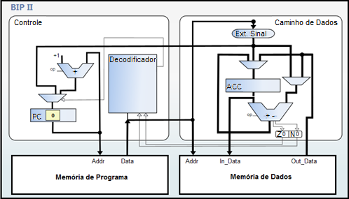

O BIP II consiste em uma extensão do BIP I, sendo assim, ele possui as mesmas características arquiteturais. Sua especificação foi idealizada para incluir o suporte a estruturas de controle, com tal suporte tornou-se possível a implementação de desvios condicionais, desvios incondicionais e laços de repetição. Com isso o conjunto de instruções foi complementado, realizando a adição da Classe de instruções para desvios composta por instruções de comparação, instruções de desvio condicional e uma instrução de desvio incondicional, descritas na tabela abaixo. As instruções do BIP II herdaram o formato de instruções especificados no BIP I. (MORANDI; RAABE; ZEFERINO, 2006).
Para que fosse possível realizar as operações acrescentadas ao BIP II a adição de um novo registrador também se fez necessária. O registrador em questão é um registrador de status, o qual possui duas flags, são elas Z (Zero) e N (Negative). Toda instrução de comparação e desvio condicional devem ser realizadas após uma instrução de subtração e dependendo do resultado da subtração as flags são acionadas. Os valores das flags são verificados pelas instruções de comparação e desvio para determinar se o desvio deve ser realizado ou não, de acordo com o tipo de comparação associado. (MORANDI; RAABE; ZEFERINO, 2006).
| Código da operação | Instrução | Operação | Classe |
|---|---|---|---|
| 00000 - 00111 | Conjunto de instruções referentes ao BIP I. | ||
| 01000 | BEQ |
Se (STATUS.Z=1) então PC ← (endereço) Se não PC ← PC + 1 |
Desvio Condicional |
| 01001 | BNE |
Se (STATUS.Z=0) então PC ← (endereço) Se não PC ← PC + 1 |
Desvio Condicional |
| 01010 | BGT |
Se (STATUS.Z=0) e (STATUS.N=0) então PC ← (endereço) Se não PC ← PC + 1 |
Desvio Condicional |
| 01011 | BGE |
Se (STATUS.N=0) então PC ← (endereço) Se não PC ← PC + 1 |
Desvio Condicional |
| 01100 | BLT |
Se (STATUS.N=1) então PC ← (endereço) Se não PC ← PC + 1 |
Desvio Condicional |
| 01101 | BLE |
Se (STATUS.Z=1) ou (STATUS.N=1) então PC ← (endereço) Se não PC ← PC + 1 |
Desvio Condicional |
| 01110 | JMP |
PC ← (endereço) |
Desvio Incondicional |
| 01111 - 11111 | Reservado |
Fonte: Adaptado de Morandi, Raabe e Zeferino (2006).
A organização do BIP II, assim como a arquitetura, é uma extensão do BIP I, aonde foi incluído o registrador status e realizadas algumas modificações no circuito de atualização do PC, como pode ser visualizado na figura abaixo. Tais alterações acrescentaram um grau de complexidade adicional, porém ainda com uma fácil compreensão. (MORANDI; RAABE; ZEFERINO, 2006).
Fonte: Vieira (2012).